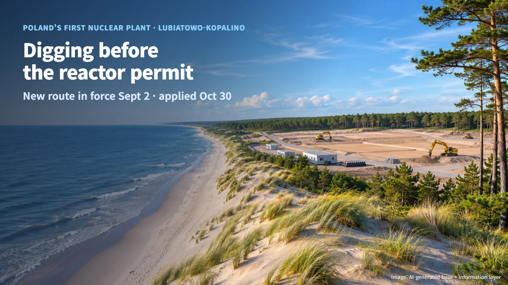
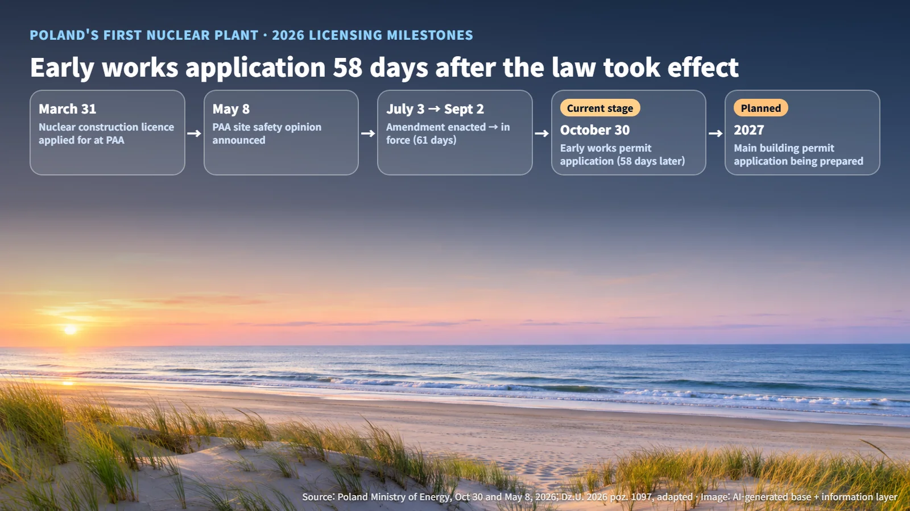
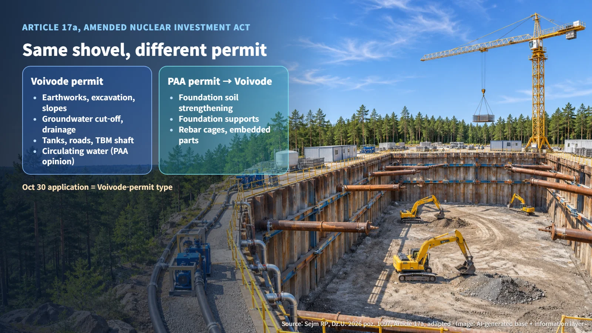
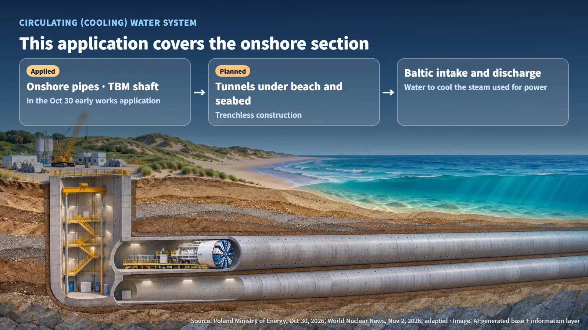

Poland · Licensing
Digging Before the Reactor Permit: Poland's New Early Works Route and the Cooling Water Application
PEJ applied on October 30 for an early works permit covering excavation, drainage and the onshore cooling water section, using a route that took effect on September 2.
A nuclear construction site gets busy long before the reactor building starts to rise. Crews have to dig deep, hold back groundwater seeping into the excavation, and build roads for heavy equipment. So which of these jobs can start before the permit for the plant itself is issued? Earlier posts on Poland's AP1000 project looked at how long-lead components and conditional module orders were lined up ahead of time; this time the early start moves from the supply chain to the ground.
On October 30, 2026, Polish nuclear developer PEJ (Polskie Elektrownie Jądrowe) applied for an early works building permit to the Pomeranian Voivode (Pomorskie province governor) for the country's first nuclear power plant site. The project will build three AP1000 units at the Lubiatowo-Kopalino site. The current stage is an application. The next steps are the Pomeranian Voivode's decision, along with the permit conditions and approved drawings.

An "Early Works" Route Created in September
Poland amended its Nuclear Investment Act through a law (Dz.U. 2026 poz. 1097) that was enacted on July 3, 2026, promulgated on August 18, and entered into force on September 2. The amendment adds new Articles 17a to 17c, which let a developer apply separately for certain early works before receiving the building permit for the main plant. Article 17c provides that the early works procedure and the main building permit procedure may run in parallel.
Lining up this year's milestones in order shows how the pieces fit. PEJ applied to the PAA (National Atomic Energy Agency) for a nuclear construction licence on March 31. On May 8, the Ministry of Energy announced the PAA's site safety opinion on the preliminary site report. The law was then enacted and took effect, and the early works application followed on October 30.
- Enactment to entry into force: 28 remaining days of July + 31 days of August + 2 days of September = 61 days
- Entry into force to application: 28 remaining days of September + 30 days of October = 58 days
In other words, Poland's first nuclear project used the new route less than two months after it became available. That opens a path for site preparation to overlap in time with the review of the main plant permit. The actual time saved has not been calculated from public data, because a confirmed construction schedule has not been published.

Same Shovel, Different Permit Path
Article 17a divides early works into two types: those that require a separate safety permit from the PAA and those that do not. Both types go through the Pomeranian Voivode's building permit procedure. For the type that requires it, the PAA permit issued under Article 36l of the Atomic Law must be submitted before the governor's permit is issued (Article 17b).
| Category | Typical works | Permit path | |---|---|---| | No PAA safety permit required | Earthworks, deep excavation, slope reinforcement; groundwater cut-off and drainage; retention tanks, roads, launch shafts; circulating water system | Pomeranian Voivode building permit | | PAA safety permit required | Strengthening, waterproofing and stabilizing the foundation soil; foundation support structures; rebar cages and embedded parts anchoring the foundation | PAA permit, then Pomeranian Voivode building permit |
(Source: Sejm RP, Dz.U. 2026 poz. 1097, adapted)
Both rows look like work with soil, but the dividing line is whether the work directly carries the weight of the reactor structures. Excavation clears the space where the reactor will sit. Strengthening the foundation soil makes sure the structures placed there will not tilt or settle over the long term. That is why nuclear safety review begins with the ground directly beneath the foundation. Annex 7 of the Atomic Law requires this type of work to be supported by a settlement model with its input data and verification methods, the bearing capacity and stability of the ground, ground changes over time, groundwater effects, and safety assessment and quality management documents. After the permit is granted, significant changes affecting safety require PAA consent, while changes with no such effect require prior notification.

The Onshore Section of a Cooling Water Route to the Sea
The application covers deep excavation with wall stabilization and groundwater cut-off, retention tanks for rainwater and snowmelt, internal roads, and a launch shaft from which a tunnel boring machine (TBM) will start underground. It also includes the onshore section of the intake and discharge pipelines for the circulating (cooling) water system. The circulating water system is the route that draws in and sends back large volumes of water to cool the steam used for power generation back into water. The full route is planned to be built by trenchless methods, meaning tunnels bored beneath the beach and the Baltic seabed without digging up the surface.
The Ministry of Energy explained that the circulating water system has already received a general opinion from the PAA rating it as of low importance for nuclear safety and radiation protection. On that basis, the ministry described this scope as work that can proceed without a separate PAA early works safety permit. The PAA opinion of May 8 covered the site, while the opinion underpinning this application covers the system itself.
The result is that the onshore starting point of the cooling water tunnels running under the beach can be prepared alongside the main plant permit. At the time of the application, the second stage of existing preparatory works was under way at the site, and Bechtel was carrying out detailed onshore and offshore geological surveys.

How Early Works Records Feed the Main Plant Design
The real value of working first lies in what crews actually confirm underground. The soil layers and groundwater observed during excavation, the as-built locations, and the coordinates and elevations of the connection points on the onshore circulating water section all become inputs for the foundations and pipelines designed next.
This information moves in a sequence: design assumption, field observation, change decision, updated drawing. For example, if the soil layers revealed during excavation differ from those assumed in the design, engineers decide whether the difference stays within the scope of the early works or calls for a fresh review of later structures such as the foundation, and the outcome is recorded in the drawing revision history. The more the early works and the main permit run in parallel, the more this record serves as the bridge between the two procedures.
PEJ is preparing to apply in 2027 for the building permit for the main construction phase. Before then, the remaining steps are the Pomeranian Voivode's decision on the early works permit and its conditions, followed by a main plant design that incorporates the results of the early works.
Building a nuclear plant starts with reading the ground, well before the reactor goes up. Poland's early works application shows the route by which that record of the ground makes its way into the safety review.